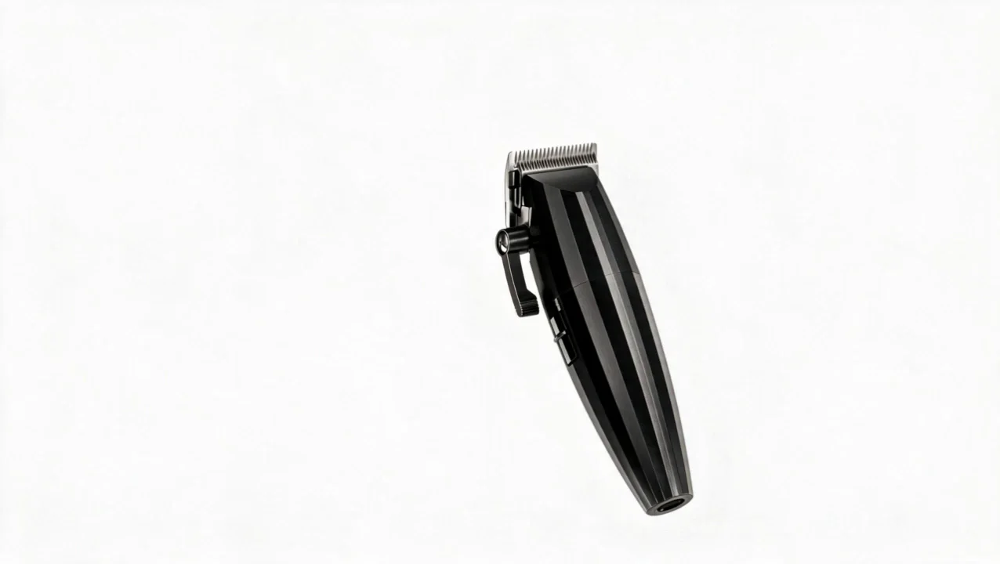
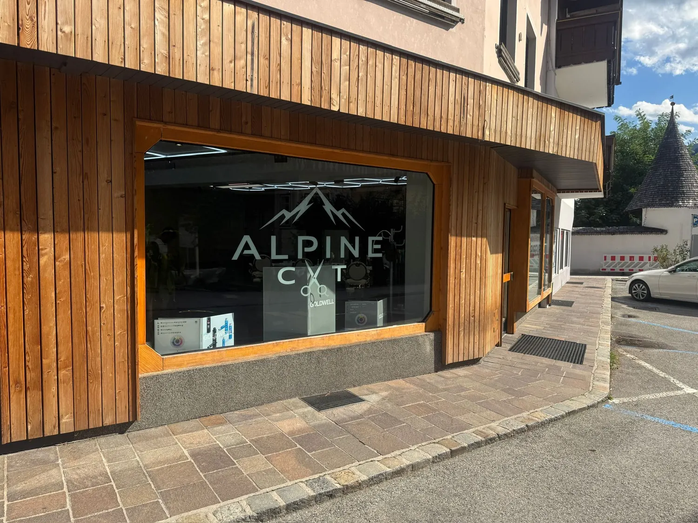
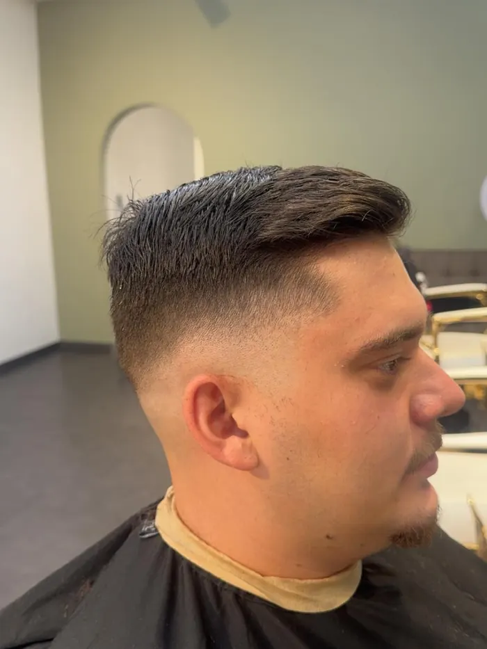
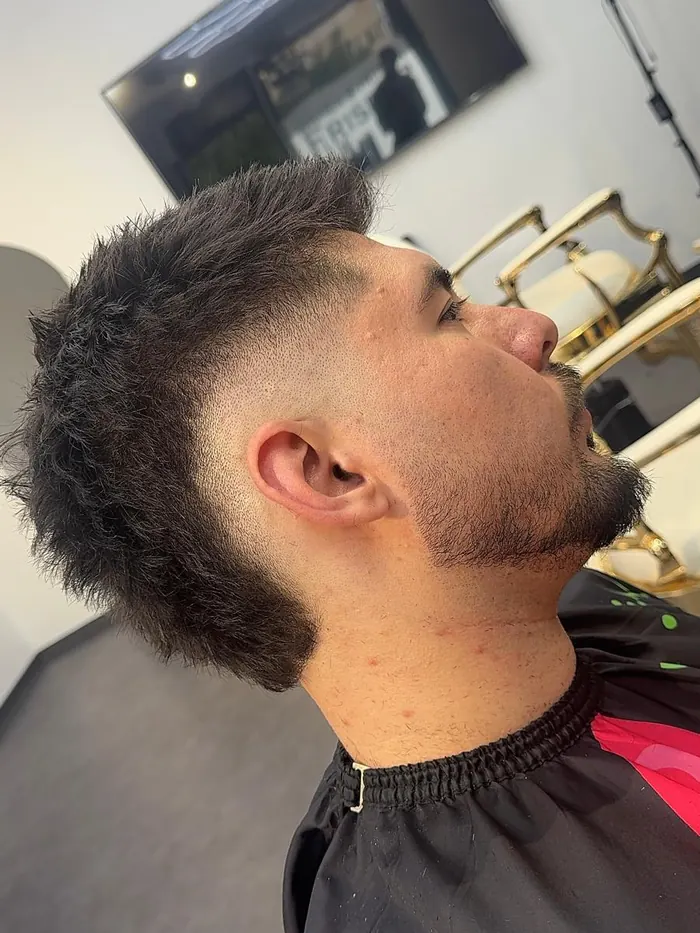
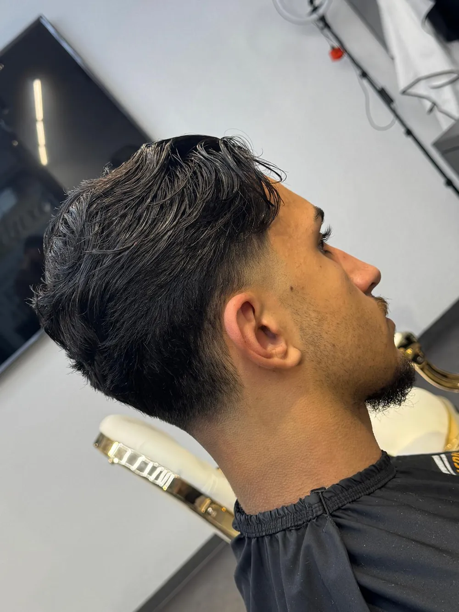
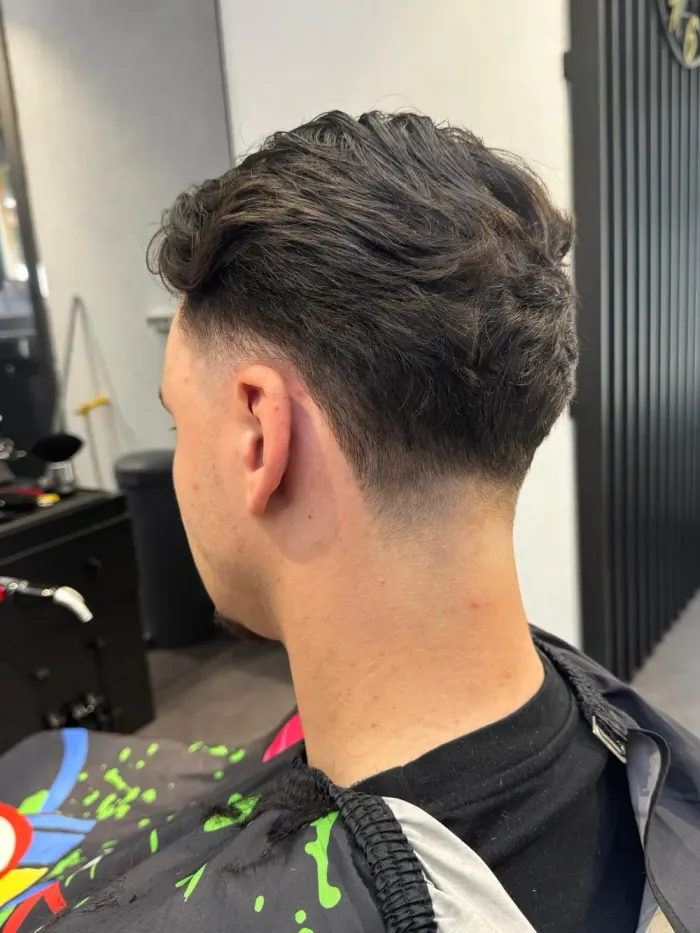
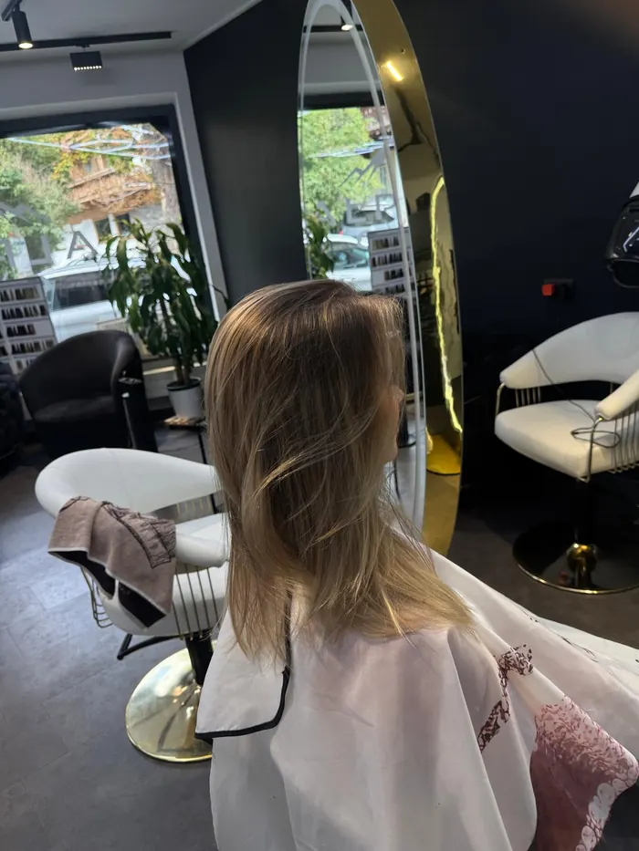
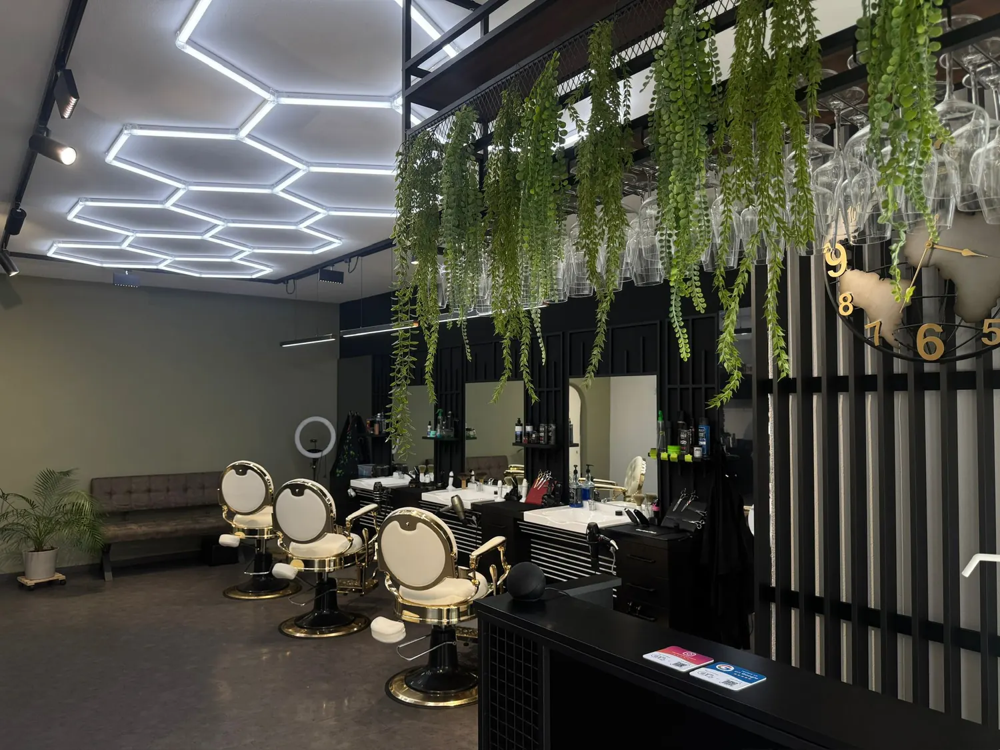
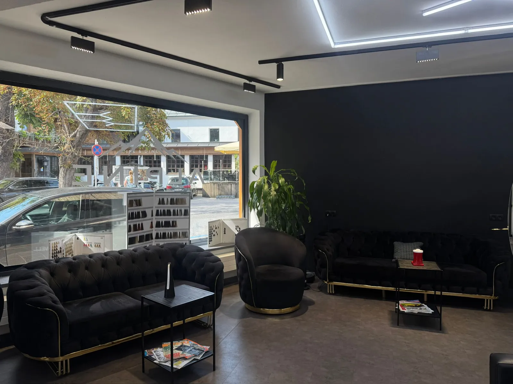

Herren
| Maschinenhaarschnitt | 16 € |
|---|---|
| Musterhaarschnitt | 6 € |
| Bartrasur | 10 € |
| Maschinenbartrasur | 13 € |
| Musterbartrasur | 15 € |
| Waschen, Schneiden, Föhnen | 26 € |
| Waschen und Föhnen | 8 € |
| Wachs | 8 € |
| Black Mask | 8 € |
| Kopfmassage | 5 € |
Zuordnung noch nicht bestätigt

Ohne Termin, einfach vorbeikommen
Ihr Friseur im Zillertal.
Alpine Cut ist Ihr Friseurladen im Zillertal, mitten in Fügen zwischen den Bergen. Wir schneiden Damen und Herren, dazu Bart, Farbe und Pflege. Einen Termin brauchen Sie nicht, kommen Sie einfach vorbei.

Stand der Tafel im Salon. Dort gilt der Aushang.
| Maschinenhaarschnitt | 16 € |
|---|---|
| Musterhaarschnitt | 6 € |
| Bartrasur | 10 € |
| Maschinenbartrasur | 13 € |
| Musterbartrasur | 15 € |
| Waschen, Schneiden, Föhnen | 26 € |
| Waschen und Föhnen | 8 € |
| Wachs | 8 € |
| Black Mask | 8 € |
| Kopfmassage | 5 € |
Zuordnung noch nicht bestätigt
| Behandlung | Kurz bis Ohr |
Mittel bis Schulter |
Lang ab Schulter |
Extra lang bis Linie |
|---|---|---|---|---|
| Waschen & Föhnen | 25 € | 45 € | 55 € | 65 € |
| Waschen & Legen | 45 € | 55 € | 65 € | 75 € |
| Waschen, Schneiden & Föhnen | 55 € | 65 € | 75 € | 85 € |
| Waschen & Schneiden | 35 € | 45 € | 55 € | 65 € |
Arbeiten aus dem Salon, nicht gestellt.

Fade
Crop mit Bart
Taper
Textur im Deckhaar
Lang, blondiertAngenehme Atmosphäre für Ihren Aufenthalt.


Nachzulesen im Google-Profil (öffnet in einem neuen Tab).
★★★★★
Ismail Mutlu ist einfach der beste Friseur in Zillertal! Sehr freundlich, professionell und immer perfekter Service. Ich bin jedes Mal mit dem Ergebnis mehr als zufrieden. Absolute Empfehlung.
★★★★★
War mit beiden Kindern dort (Mädchen und Junge). Beide Frisöre waren sehr freundlich und vor allem der Junge (5 Jahre) hat eine Topfrisur inkl. rassiertem Muster erhalten! Preis absolut angemessen!
★★★★★
Super schnitt und cooler Laden! Absolut freundlich und humane Preise. Kann ich nur weiterempfehlen, ich komme wieder.
★★★★★
Mega! Sofort Zeit gehabt die Jungs und Top arbeit geleistet. Könnte ich 6 Sterne vergeben würde ich es machen!
★★★★★
Sehr guter Salon nette Menschen und guter Service!! Komme immer gerne.
★★★★★
Sehr guter Salon, netter friseur! Geht auf Wünsche ein! Tip Top!
★★★★★
Super Service, super Preise! Vielen Dank! Beim nächsten Mal sehr gerne wieder.
★★★★★
Guada Bua, super Aufenthalt.
★★★★★
Great cut, thanks!
Dorf-Platz 1
6263 Fügen, Tirol
Montag 10 bis 18 Uhr
Dienstag bis Freitag 9 bis 18 Uhr
Samstag 9 bis 16 Uhr